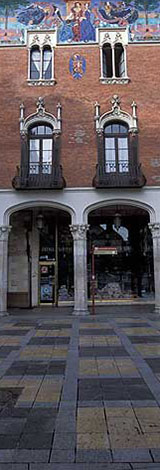
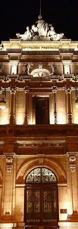
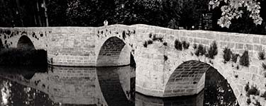
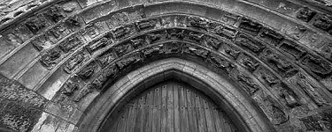

|  |
MonumentosPalencia dispone de numerosos monumentos interesantes. Debido a su importante actividad medieval poseee una gran cantidad de edificios religiosos entre los que destaca la Catedral de Palencia así como la iglesia de San Miguel con su peculiar torre de defensa y el monumento más conocido de la ciudad: El Cristo del Otero A finales del siglo XIX y principios del XX aparecieron edificios suntuosos y civiles que han embellecido una buena parte de la ciudad, en especial la transitada Calle Mayor. |
 | |
Edificios religiosos
|
Edificios civiles
|
||
|  |  | ||
| Página realizada en el Centro Don Bosco, Salesianos de Villamuriel | |||